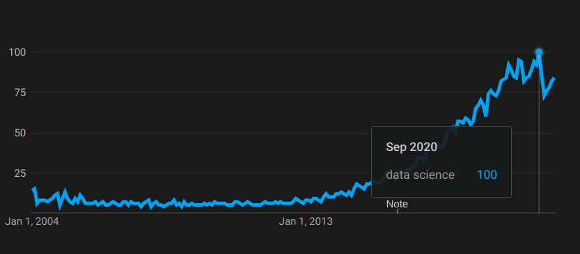
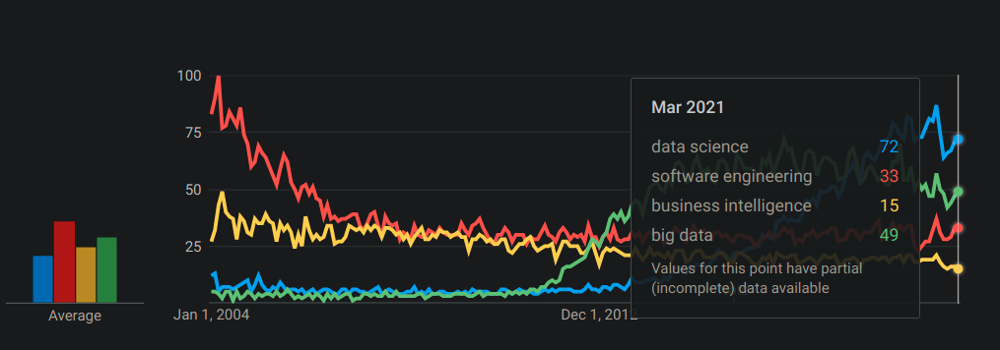
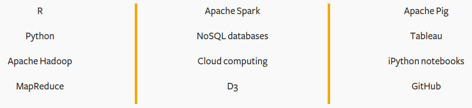
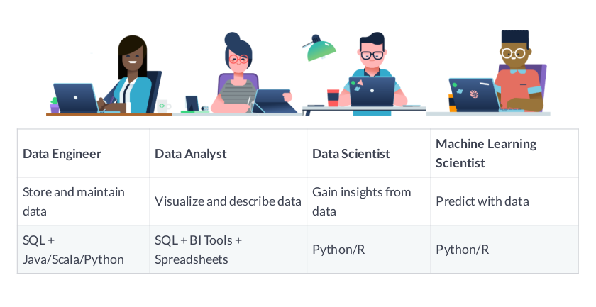
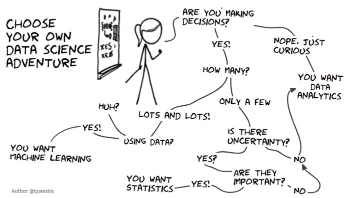
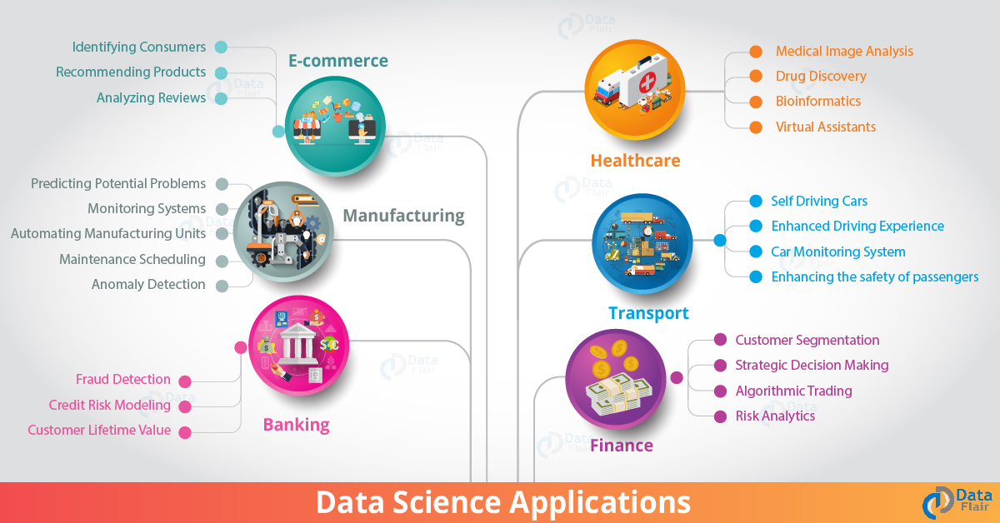
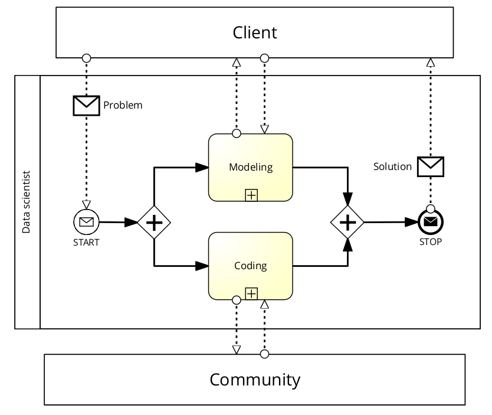
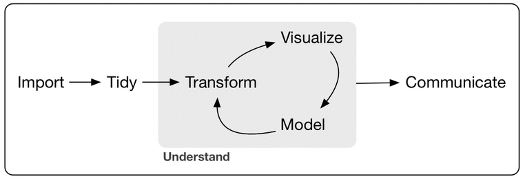
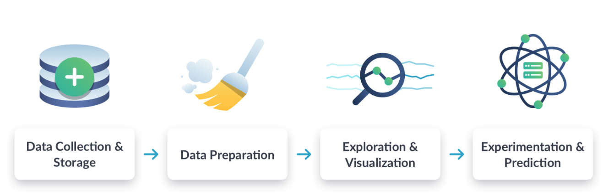
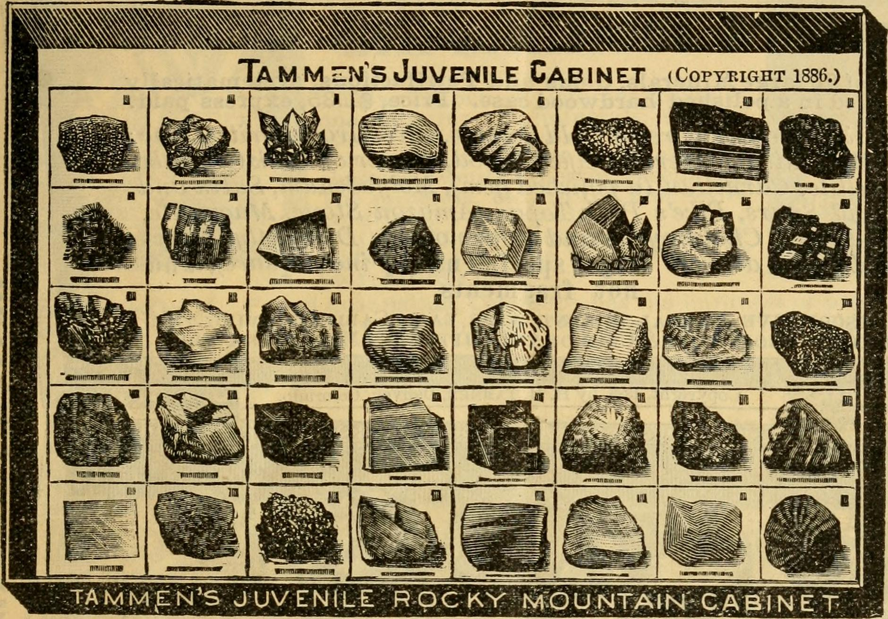

DATA SCIENCE OVERVIEW
(Data Science Tools and Methods)
Marcus Birkenkrahe
Created: 2021-07-16 Fr 10:16
Table of Contents
- You are like Pythagoras
- What will you learn?
- How popular is data science?
- What are data science skills?
- What's the (US) job market for data scientists like?
- What are data science problems?
- What is the data science process?
- Concept summary
- R Demo - visualization example
- Code summary
- What's next?
- Thank you! Questions?
- References
- "Your tuRn" (hints and solutions)
You are like Pythagoras
What will you learn?
- How and why data science is so popular
- What skills you need to do data science
- Which problems data science can solve
- What data scientists do all the time
How popular is data science?

How would you try to find out?
Ways to explore popularity
- Search (how?)
- Find relevant models (how?)
- Generate primary data (how?)
- Use secondary data (instead of?)
Any issues with these methods?
Worldwide searches 2004-2021

How would you explain this curve?
The definition of sexy
»The best data scientists are product and process innovators and sometimes, developers of new data-discovery tools. That is the definition of sexy.«
Gil Press (Forbes, 09/27/12)
Popularity contest
Which one is most searched:
- Big data?
- Business intelligence?
- Software engineering?
- Data science?
The winner is…

How do you like the visualization?
What are data science skills?

Can you give some examples?
What about you?
| Kanban: What are your skills? |
 |
| Compare: "My IT skill stack"5 |
What are technical data science skills?

Have you heard of any of these?
What is frankenstein made of?

Source: datasciencecentral.com
What about you?
Do you have a "brain for numbers"? Do you prefer people or stories?

What do metaphors do?

Metaphors are models.
What's the (US) job market for data scientists like?

Challenge: search a job portal for "data scientist".
Job profiles (DataCamp)

Who would you rather be?
What are data science problems?

Source: Cassie Kozyrkov (@quaesita)
Data science applications

Source: data-flair.training
A real world problem

Source: Industrial Cybersecurity (2017)
Time series analysis & text mining

Source: Linux /var/log/syslog event log
What is the data science process?

Source: Birkenkrahe (2021)
Problem-centered process

Source: Birkenkrahe (2021)
EDA-centric process model

Source: Wickham/Grolemund (2017)
Data science workflow

Source: Data science for everyone (DataCamp)
Concept summary
- Data science is used for decision support, process analytics and machine learning.
- Data science makes use of domain knowledge - experience in a particular field of business.
- The job market for data science is good.
- The data science process includes modeling, visualizing, and communicating data analysis results.
Read the seminal article by Davenport/Patil (2012).
R Demo - visualization example

Code summary
data() |
import dataset |
head() |
print first few lines of dataset |
str() |
show dataset structure |
summary() |
print statistics overview of dataset |
plot() |
create scatterplot |
lm() |
fit linear [regression] model to data |
abline() |
add straight lines through a plot |
What's next?
| DataCamp assignment | Data collection and storage |
| Installing R | Try it yourself! |
| First steps in R | We'll do it together! |
| Kahoot! quiz | 5 simple questions |
Thank you! Questions?

References
- Blum A/Hopcroft J/Kannan R (4 Jan 2018). Foundations of Data Science - Cornell U. Online: cornell.edu.
- Bobriakov I (16 Apr 2020). Data Science vs. Decision Science [Infographic]. Online: medium.com/@bobriakov.
- Bolles R and Brooks K (2021). What color is your parachute? Online: https://www.parachutebook.com/
- Chiu J (17 Aug 2020). Why Data Doesn't Have to Be That Big. Online: datacamp.com.
- Davenport TH/Patil DJ (2012). Data Scientist: The Sexiest Job of the 21st Century. Online: hbr.org.
- Devlin K (1 Jan 2017). Number Sense: the most important mathematical concept in 21st Century K-12 education. Online: huffpost.com.
- Gapminder Foundation (15 Dec 2014). DON'T PANIC - Hans Rosling showing the facts about population. Online: youtube.com
- Grolemund G/Wickham H (2017). R for Data Science. O’Reilly.
- Irizarry R (2020). Introduction to Data Science. CRC Press.
- Kozyrkov C (10 Aug 2018). What on earth is data science? Online: hackernoon.com.
- Kozyrkov C (22 May 2019). Automated Inspiration. Online: Forbes.com]].
- Knuth D (1992). Literate Programming. Stanford, Center for the Study of Language and Information Lecture Notes 27.
- Myers A (28 Apr 2020). Data Science Notebooks - A Primer. Online: medium.com/memory-leak.
- Porras E M (18 Jul 2018). Linear Regression in R. Online: datacamp.com.
- Prevos P (14 Aug 2020). Storytelling with Data: Visualising the Receding Sea Ice Sheets. Online: lucidmanager.org]].
- Robinson E/Nolis, J (2020). Build a Career in Data Science. Manning.
- Rohrer B (2015a). What Can Data Science Do For Me? Online: microsoft.com.
- Rohrer B (2015b). What Types of Questions Can Data Science Answer? Online: microsoft.com.
- Rohrer B (2015c). Which Algorithm Family Can Answer My Question? Online: microsoft.com.
- Saklani P (19 Jul 2017). Sometimes “Small Data” Is Enough to Create Smart Products. Online: hbr.org.
- Sarkar DJ (12 Sept 2018). A Comprehensive Guide to the Grammar of Graphics for Effective Visualization of Multi-dimensional Data. Online: towardsdatascience.com
- Scherpereel CM (2006). Decision orders: A decision taxonomy. In: Management Decision 44(1):123-136.
- Wing JM (2 Jul 2019). The data life cycle. Harvard Data Science Review. Online: hdsr.mitpress.mit.edu.
"Your tuRn" (hints and solutions)
Popularity
Check out the seminal article by Davenport/Patil 2012. (At least) one answer is in there.
Skills
Recently, an MBA student asked me these same questions and here is my answer: "My IT Skill Stack". See also Bolles and Brooks (2021)
Software
- D3.js, a JavaScript library for manipulating documents based on data. D3 helps you bring data to life using HTML, SVG, and CSS.
- Apache Hadoop, a "software library framework that allows for the distributed processing of large data sets across clusters of computers using simple programming models. It is designed to scale up from single servers to thousands of machines, each offering local computation and storage. Rather than rely on hardware to deliver high-availability, the library itself is designed to detect and handle failures at the application layer, so delivering a highly-available service on top of a cluster of computers, each of which may be prone to failures." (Source: Apache.org)
- MapReduce, "a programming paradigm that enables massive scalability across hundreds or thousands of servers in a Hadoop cluster. As the processing component, MapReduce is the heart of Apache Hadoop. The term "MapReduce" refers to two separate and distinct tasks that Hadoop programs perform. The first is the map job, which takes a set of data and converts it into another set of data, where individual elements are broken down into tuples (key/value pairs). The reduce job takes the output from a map as input and combines those data tuples into a smaller set of tuples. As the sequence of the name MapReduce implies, the reduce job is always performed after the map job." Source: IBM. See also: tutorialspoint.
- Apache Spark, "a lightning-fast unified analytics engine for big data and machine learning. It was originally developed at UC Berkeley in 2009." Source: databricks.
- NoSQL "databases, purpose-built for specific data models and have flexible schemas for building modern applications. NoSQL databases are widely recognized for their ease of development, functionality, and performance at scale." Source: AWS.
- Apache Pig, "a platform for analyzing large data sets that consists of a high-level language for expressing data analysis programs, coupled with infrastructure for evaluating these programs. The salient property of Pig programs is that their structure is amenable to substantial parallelization, which in turns enables them to handle very large data sets. At the present time, Pig's infrastructure layer consists of a compiler that produces sequences of Map-Reduce programs, for which large-scale parallel implementations already exist (e.g., the Hadoop subproject). Pig's language layer currently consists of a textual language called Pig Latin." Source: apache.org. Tutorialspoint.
- Tableau (owned by Salesforce), commercial interactive data visualization software (SQL-based dashboards). Tableau public.
- iPython notebook (now "Jupyter Notebook"), a "interactive computational environment, in which you can combine code execution, rich text, mathematics, plots and rich media." Source: jupyter.org. Part of the Anaconda distribution. See also: Google Colaboratory for a (free) cloud-based version.
- GitHub (owned by Microsoft), "a website and cloud-based service that helps developers store and manage their code, as well as track and control changes to their code" (Source: kinsta.com) centered on the open-source version control software Git. There are many platforms like GitHub (e.g. GitLab, BitBucket, SourceForge).
Of these applications, only Git (not GitHub) is really absolutely necessary for a professional data scientist working in teams. Though a working knowledge of the principles behind all of them will be very useful (especially if they come up in interviews). Hence, no reason to be scared.
Your brain
Other terms for what we're talking about here are: "number sense" (in maths education), or "computational thinking" (in computer science) or, more recently, "data literacy". All of these are relatively new concepts, so feel free to speculate and make up your own mind! Cp. Devlin 2017
Frankenstein
How do you feel about anything if doing it would turn you into a monster? What kind of monster is Frankenstein (if you didn't read the book or saw the film, I'll tell you: ugly but soulful, loveable and capable of love, too)? What is special about him as a monster in mechanical terms?
Job market
Mathematics, especially statistics, programming and databases are the skill-based disciplines that you need to master. Having said that: "mastering" could easily take not one, but several life times, and you need to begin somewhere. If you do this in earnest, you'll soon find that you start learning faster and faster the more connections with what you already know you can make.] Here is a (free) book called, incidentally, "Foundations of Data Science" (Blum et al 2015, 466 p.). It includes some geometry, graph theory, linear algebra, markov chains, and a variety of algorithms for "massive data problems" like streaming, sketching and sampling.
Decisions
The figure (like the underlying article) targets business decisions more than everyday decisions. For business decisions, taxonomies exist, which are generally a lot more complicated than shown here, see e.g. Scherpereel 2006.
Process
On the surface, Wing's "Data Life Cycle" (2019) has a few more steps (and it is also not a "cycle") - it does not use the artificial (technical) term "tidy" but instead terms that can more easily be understood by practitioners outside of data science. Modeling is not addressed by Wing but instead she puts "management" at the center of the process, right between data-centric and (business) process-centric categories. Another related process model you may have heard of is the "design thinking" process, which plays an important role in innovation and when solving so-called "wicked problems".
{kind=link}
Summary
"The ability to write code" is still the "most basic, universal skill" for a data scientist - which is why learning R is the focus of this introductory course. There are many data science programs at universities now - often offered as minors or as Masters programs for people trained already in maths, computer science, or fields with obvious and current data science applications (like biology). The understanding of a data scientist as a hybrid professional has not really changed sinc